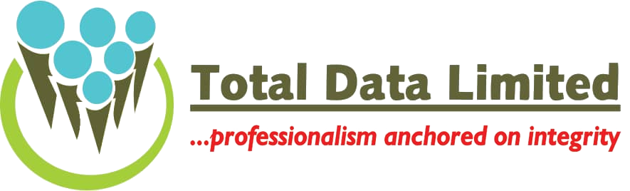

End-to-end HR and business process outsourcing across Nigeria and Benin Republic, since 2000.
Statutory PAYE, pension and HMO remittance, off your desk. One payroll calendar across every state you operate in.
Read about payroll“They have consistently provided a high level of service, and their people are professional and responsive.”
| Pair | Foreground | Ground | Ratio | Needs |
|---|